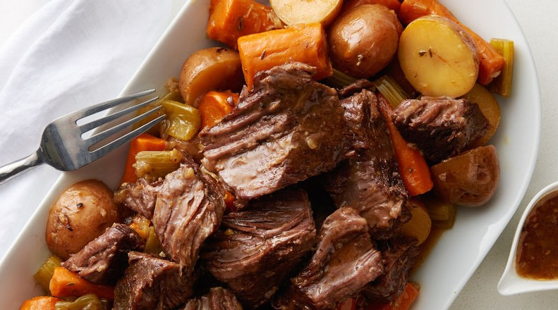

Slow Cooker Pot Roast

Description
This slow cooker pot roast recipe always turns out moist and juicy. It's
cooked with carrots, onion, celery, and potatoes.
Ingredients
- 4 pounds chuck roast
- Salt and pepper to taste
- 2 tablespoons olive oil
- 1 packet dry onion soup mix
- 1 cup water
- 3 carrots, chopped
- 3 potatoes, peeled and cubed
- 1 onion, chopped
- 1 stalk celery, chopped
Steps
- Season roast generously with salt and pepper.
-
Heat oil in a large skillet over high heat; add roast and sear, about 4
minutes per side.
- Place roast in the slow cooker; sprinkle soup mix on top.
- Add water; scatter carrots, potatoes, onion, and celery on top.
- Cover and cook on Low for 8 to 10 hours.
Home